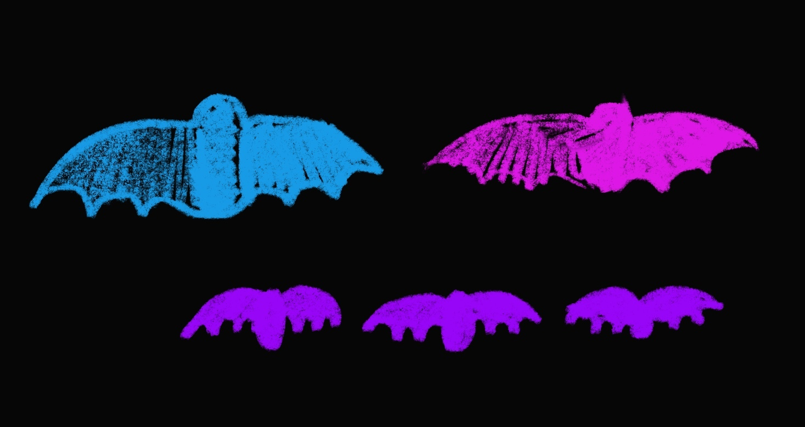

When a mummy bat is going to have a baby bat:
· It takes around six to nine weeks
· But you know what? How long it takes can change depending on the kind of bat and things like the weather, the place where they live, and if there's enough food
· Bats have their own special ways of having baby bats!
How many babies do bats typically have at a time?
· Bats usually have just one baby bat, and they call it a "pup," each year
· The mommy and daddy bats take good care of their little pups and keep them safe and close
· It's like they're the best bat parents!
How long do the babies live with the parent?
· Baby bats drink their mum's milk for about four to five weeks until they're strong enough to fly
· After that, they start exploring and looking for their own food outside of their bat home. It's like a big adventure for them!
